Bootstrapping Prometheus, Grafana and Alertmanager to PKS deployed K8s Clusters
PKS is a comprehensive platform for the provisioning and management of Kubernetes clusters, which can be further enhanced by leveraging its extensibility options. In this post, we will modify a plan to deploy a yaml manifest file which provisions Prometheus, Grafana, and Alertmanager backed by NSX-T load balancers.
Why Prometheus, Grafana and Alertmanager?
The Cloud Native Computing Foundation accepted Prometheus as its second incubated project, the first being Kubernetes. Originally developed by SoundCloud. It has quickly become a popular platform for the monitoring of Kubernetes platforms. Built upon a powerful analytics engine, extensive and highly flexible data modeling can be accomplished with relative ease.
Grafana is, amongst other things, a visualisation tool that enables users to graph, chart, and generally visually represent data from a wide range of sources, Prometheus being one of them.
AlertManager handles alerts that are sent by applications such as Prometheus and performs a number of operations such as deduplicating, grouping and routing.
What I wanted to do, as someone unfamiliar with these tools is to devise a way to deploy these components in an automated way in which I can destroy, and recreate with ease. The topology of the solution is depicted below:
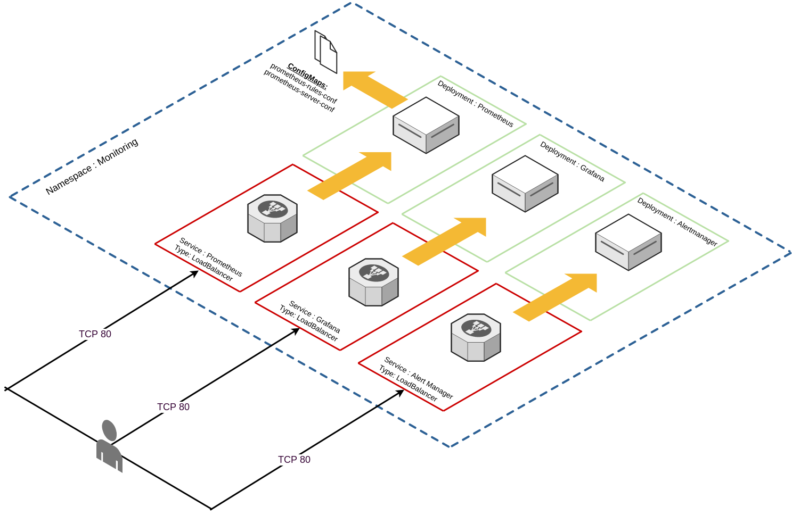
Constructing the manifest file
TLDR; I’ve placed the entire manifest file here, which creates the following:
- Create the “monitoring” namespace.
- Create a service account for Prometheus.
- Create a cluster role requires for the Prometheus service account.
- Create a cluster role binding for the Prometheus service account and the Prometheus cluster role.
- Create a config map for Prometheus that:
- Defines the Alertmonitor target.
- Defines K8S master, K8S worker, and cAdvisor scrape targets.
- Defines where to input alert rules from.
- Create a config map for Prometheus that:
- Provides a template for alerting rules.
- Create a single replica deployment for Prometheus.
- Expose this deployment via “LoadBalancer” (NSX-T).
- Create a single replica deployment for Grafana.
- Expose this deployment via “LoadBalancer” (NSX-T).
- Create a single replica deployment for Alertmonitor.
- Expose this deployment via “Loadbalancer” (NSX-T).
Bootstrapping the manifest file in PKS
Log into Ops manager and select the PKS tile:
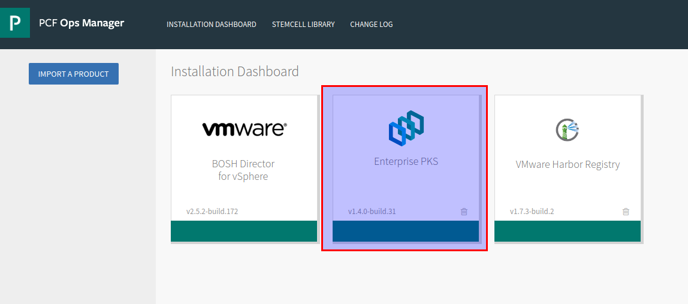
Select a plan from the left-hand side, record the plan name for later:
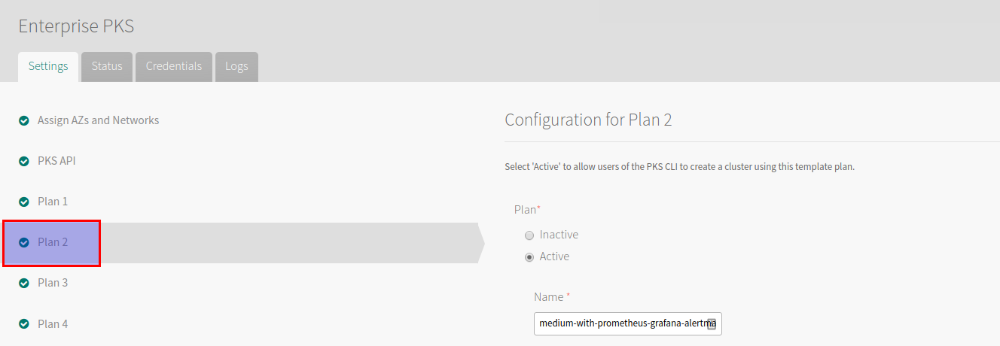
Scroll down and paste the aforementioned YAML file into the Add-ons section
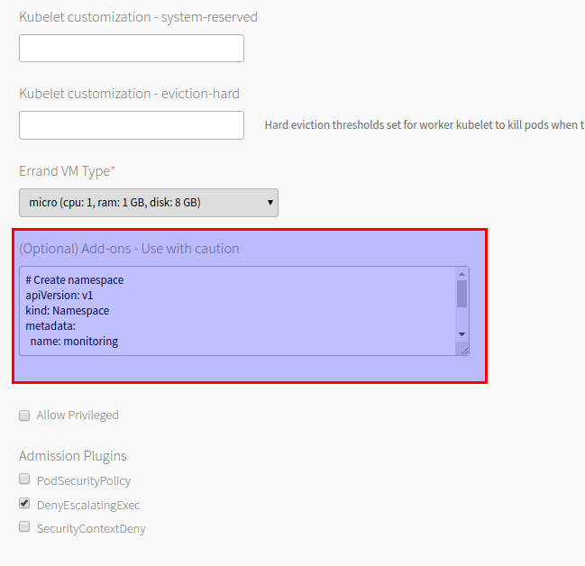
Save and then provision a cluster using the aforementioned plan:
[code language=“bash”]
david@mgmt-jumpbox:~$ pks create-cluster k8s –external-hostname k8s.virtualthoughts.co.uk –plan medium-with-prometheus-grafana-alertmanager –num-nodes 2
[/code]
After which execute the following to acquire the list of loadbalancer IP addresses for the respective services:
[code language=“bash”] david@mgmt-jumpbox:~$ kubectl get svc -n monitoring NAME TYPE CLUSTER-IP EXTERNAL-IP PORT(S) AGE alertmanager LoadBalancer 10.100.200.218 100.64.96.5,172.16.12.129 80:31747/TCP 100m grafana LoadBalancer 10.100.200.89 100.64.96.5,172.16.12.128 80:31007/TCP 100m prometheus LoadBalancer 10.100.200.75 100.64.96.5,172.16.12.127 80:31558/TCP 100m [/code]
Prometheus - Quick tour
Logging into http://prometheus-lb-vip/targets will list the list of scrape targets for Prometheus, which have been configured via the respective configmap and include:
- API server (Master)
- Nodes (Workers)
- cAdvisor (Pods)
- Prometheus (self)
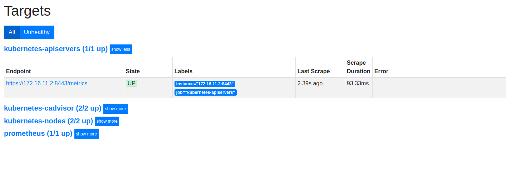
Which can be graphed / modelled / queried:
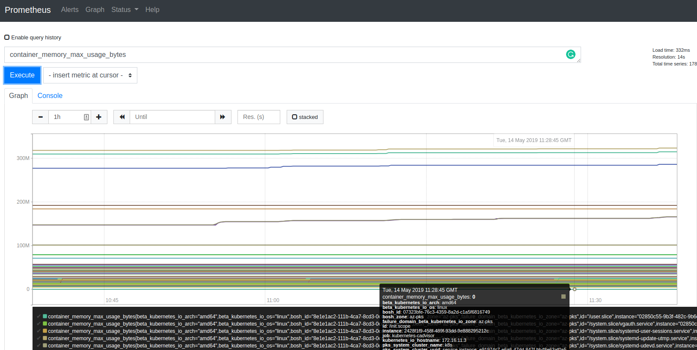
Grafana - Quick Tour
Out of the box, Grafana has very limited configuration applied - I struggled a little bit with constructing a configmap that would automatically add Prometheus as a data source, so a little bit of manual configuration is required (for now). Accessing http://grafana-lb-vip will prompt for a logon: (admin/admin) is the default
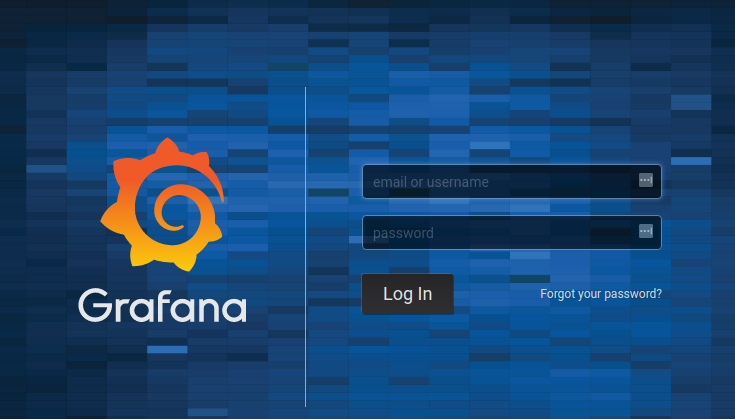
Add a data source:
Hint : use “prometheus.monitoring.svc.cluster.local” as the source URL
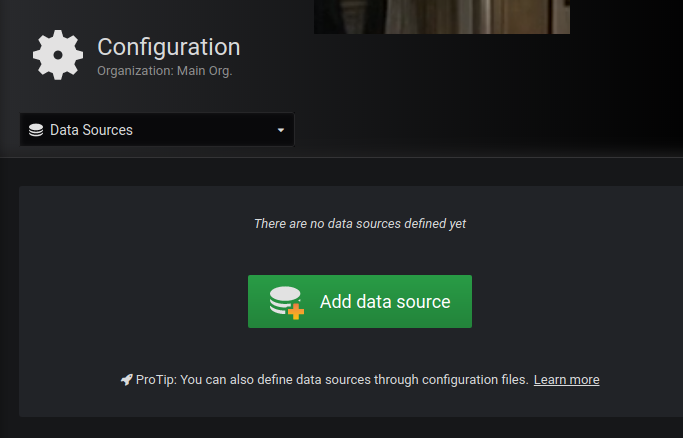
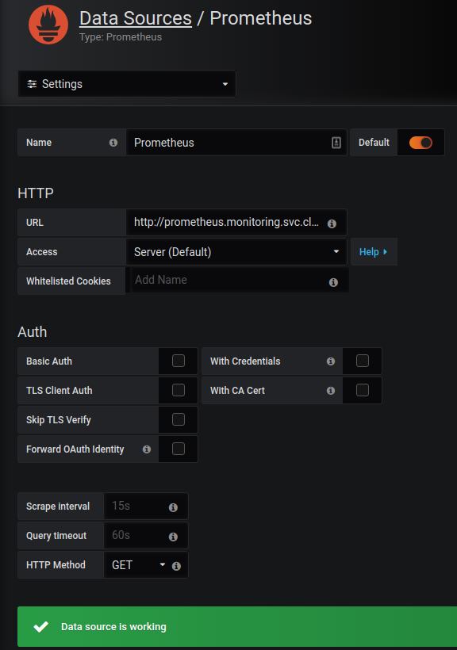
After creating a dashboard (or importing one) we can validate Grafana is extracting information from Prometheus
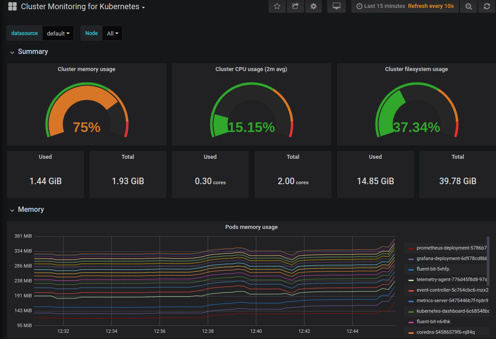
Alertmanager - Quick Tour
Alertmanager can be accessed via http://alertmanager-lb-vip. From the YAML manifest it has a vanilla config, but Prometheus is configured to use it as a alert target via the configmap:
[code language=“bash”] prometheus.yml: |- global: scrape_interval: 5s evaluation_interval: 5s alerting: alertmanagers: - static_configs: - targets: - “alertmanager.monitoring.svc.cluster.local:80” [/code]
Alerts need to be configured in Prometheus in order for Alertmanager to ingest / deduplicate / forward etc.
As an example, I tested some integration with Discord:
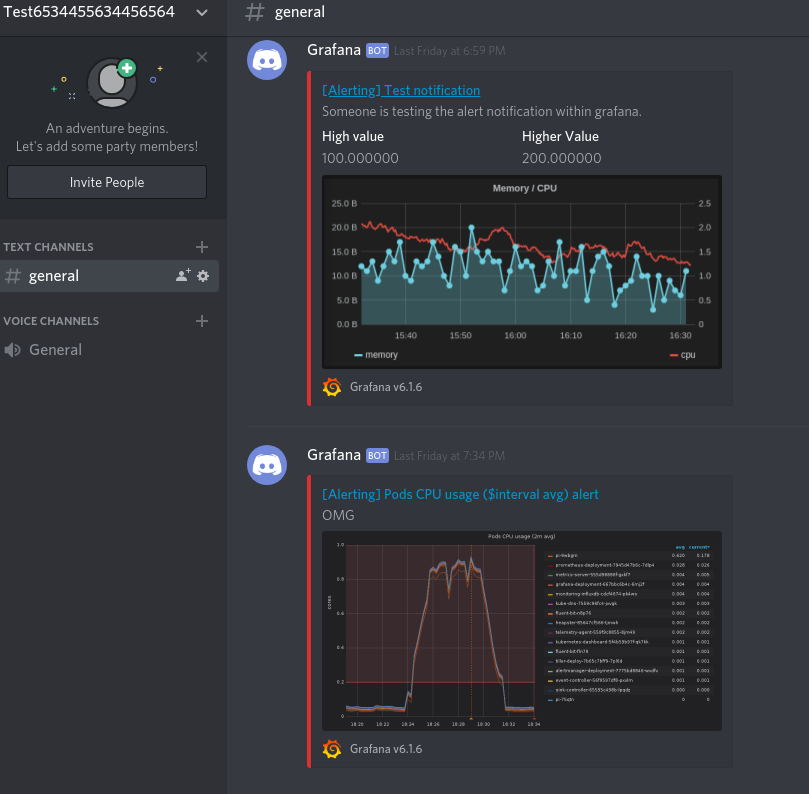
Practical to send alerts to a Discord sever? Probably not.
Fun? Yes!